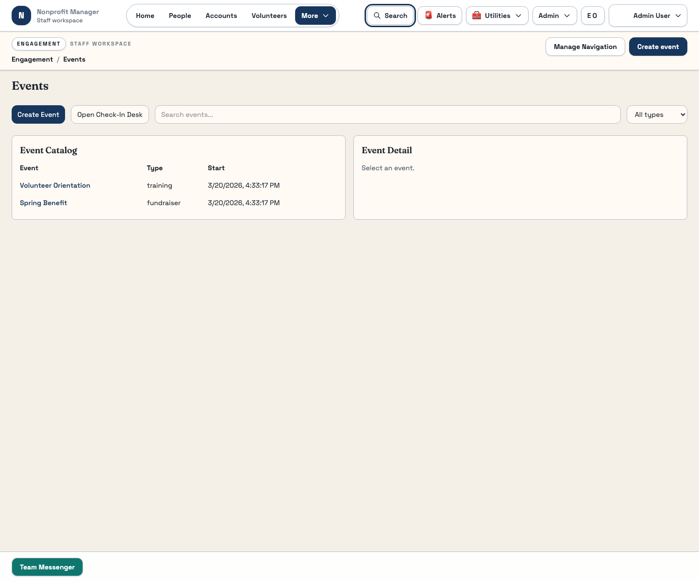
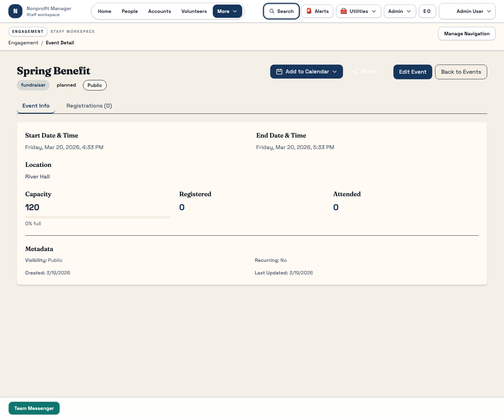
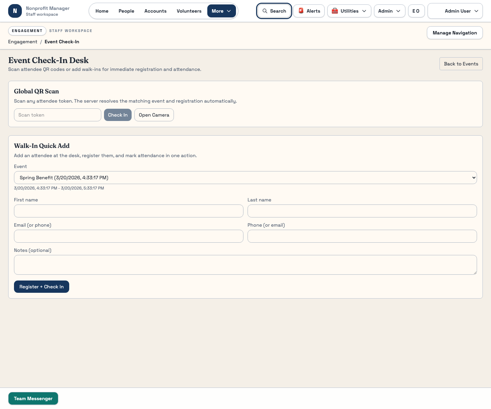

Events
Move from planning to live attendance without switching tools
The Events workspace supports the stable event workflow: create an event, review the event catalog, inspect registrations, send reminders, and run the Event Check-In Desk.
What this page is for
Use this guide when you need to run the main staff event flow from setup through live attendance. It is intentionally centered on the stable event catalog, detail, reminder, calendar, and check-in tools.
Before you start
- Know whether you are creating a new event or updating an existing one.
- Have event timing, type, and operational ownership ready before you create it.
- Confirm that the event has the right registrations loaded before you send reminders or open check-in.
Steps
- Create the event. Use Create Event when you need a new event record, and set the event type and timing carefully so reporting and staff planning stay consistent.
- Use the Event Catalog to find the right event. Search by name and filter by event type when the list is crowded.
- Review Event Detail before taking action. Select an event from the catalog, then confirm the status, description, and registration count in the detail panel.
- Send reminders only from the correct event. Use the reminder action after you confirm you are in the right event detail view.
- Use the Event Calendar for schedule context. Switch to the calendar view when staff need a broader scheduling picture instead of a single event record.
- Open the Event Check-In Desk for live attendance. Use the dedicated check-in route rather than staying in the catalog during live operations.



Reminder and check-in actions are operationally sensitive. Pause if you are not certain you have selected the correct event.
What happens next
After the event is set up and active, registrations, reminders, and attendance all start feeding operational visibility. That data can then be used in dashboard views and reports.
Common mistakes
- Sending a reminder before checking that the selected event is the right one.
- Opening the check-in desk without confirming the event and staff context first.
- Skipping event type selection and making reporting harder later.
- Assuming a registration issue is solved before refreshing the detail panel.
Related guides
Need help?
If registrations, reminders, or check-in counts look wrong, capture the event name, the action you tried, and whether the issue happened in the catalog, detail panel, or check-in desk. That context is usually enough to route the issue quickly.